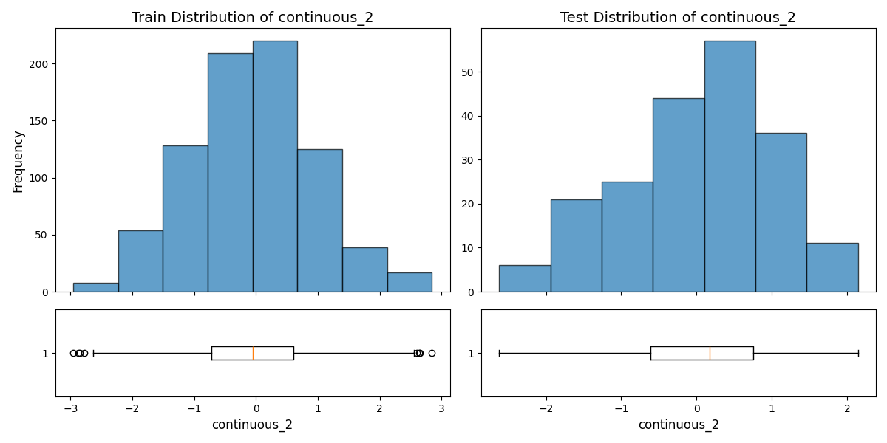

Continuous Features
Correlation Matrix
continuous_0
| Statistic | Train | Test |
|---|---|---|
| Mean | -0.06785 | 0.0582 |
| Median | -0.08146 | 0.04901 |
| Std dev | 0.98403 | 0.97207 |
| Variance | 0.96831 | 0.94491 |
| Min | -2.76482 | -2.6327 |
| Max | 3.33386 | 2.67498 |
| Range | 6.09867 | 5.30768 |
| 25 percentile | -0.75876 | -0.60262 |
| 75 percentile | 0.6238 | 0.68626 |
| Skewness | 0.09763 | -0.0333 |
| Kurtosis | -0.23135 | -0.02202 |
| Coefficient of variation | -14.50358 | 16.70292 |
continuous_1
| Statistic | Train | Test |
|---|---|---|
| Mean | -0.05894 | -0.09206 |
| Median | -0.05073 | -0.03061 |
| Std dev | 1.03198 | 1.02586 |
| Variance | 1.06497 | 1.05239 |
| Min | -4.14059 | -3.40841 |
| Max | 2.89678 | 2.84055 |
| Range | 7.03737 | 6.24896 |
| 25 percentile | -0.72985 | -0.67754 |
| 75 percentile | 0.65928 | 0.55378 |
| Skewness | -0.08971 | -0.48076 |
| Kurtosis | 0.06954 | 0.87681 |
| Coefficient of variation | -17.50781 | -11.14342 |
continuous_2
| Statistic | Train | Test |
|---|---|---|
| Mean | -0.05603 | 0.02242 |
| Median | -0.05329 | 0.17013 |
| Std dev | 0.99677 | 1.01008 |
| Variance | 0.99354 | 1.02026 |
| Min | -2.95677 | -2.62246 |
| Max | 2.84583 | 2.14575 |
| Range | 5.8026 | 4.76821 |
| 25 percentile | -0.71623 | -0.61071 |
| 75 percentile | 0.60032 | 0.75538 |
| Skewness | 0.03867 | -0.39623 |
| Kurtosis | -0.08092 | -0.35183 |
| Coefficient of variation | -17.7903 | 45.06233 |

continuous_3
| Statistic | Train | Test |
|---|---|---|
| Mean | 0.05685 | -0.00733 |
| Median | 0.04334 | 0.00603 |
| Std dev | 1.01758 | 1.01481 |
| Variance | 1.03548 | 1.02984 |
| Min | -2.72276 | -2.87787 |
| Max | 3.80417 | 2.43092 |
| Range | 6.52694 | 5.30879 |
| 25 percentile | -0.61672 | -0.66693 |
| 75 percentile | 0.74725 | 0.63987 |
| Skewness | 0.02147 | -0.01003 |
| Kurtosis | -0.00621 | 0.0627 |
| Coefficient of variation | 17.89811 | -138.48 |
continuous_4
| Statistic | Train | Test |
|---|---|---|
| Mean | -0.00986 | -0.01479 |
| Median | -0.02904 | 0.03324 |
| Std dev | 1.04001 | 1.03525 |
| Variance | 1.08162 | 1.07174 |
| Min | -3.38742 | -2.5885 |
| Max | 3.25869 | 2.20616 |
| Range | 6.64611 | 4.79465 |
| 25 percentile | -0.68511 | -0.74252 |
| 75 percentile | 0.67612 | 0.79337 |
| Skewness | -0.02263 | -0.05704 |
| Kurtosis | -0.10704 | -0.51852 |
| Coefficient of variation | -105.49644 | -70.01327 |
continuous_5
| Statistic | Train | Test |
|---|---|---|
| Mean | -0.02685 | -0.07717 |
| Median | -0.03876 | -0.09037 |
| Std dev | 0.96604 | 1.01864 |
| Variance | 0.93323 | 1.03762 |
| Min | -2.93106 | -2.53066 |
| Max | 3.0846 | 2.84742 |
| Range | 6.01566 | 5.37808 |
| 25 percentile | -0.71308 | -0.74555 |
| 75 percentile | 0.63628 | 0.57106 |
| Skewness | 0.09953 | 0.11639 |
| Kurtosis | 0.02805 | 0.04975 |
| Coefficient of variation | -35.98075 | -13.19926 |
continuous_6
| Statistic | Train | Test |
|---|---|---|
| Mean | 0.0385 | -0.02137 |
| Median | 0.01816 | 0.09238 |
| Std dev | 0.96542 | 1.01014 |
| Variance | 0.93203 | 1.02039 |
| Min | -3.89701 | -3.99636 |
| Max | 2.98311 | 2.80829 |
| Range | 6.88011 | 6.80465 |
| 25 percentile | -0.59619 | -0.56558 |
| 75 percentile | 0.73426 | 0.64691 |
| Skewness | -0.10332 | -0.63855 |
| Kurtosis | 0.16766 | 1.30655 |
| Coefficient of variation | 25.07251 | -47.26031 |
continuous_7
| Statistic | Train | Test |
|---|---|---|
| Mean | -0.02867 | 0.02459 |
| Median | -0.04099 | 0.02043 |
| Std dev | 0.95789 | 1.02044 |
| Variance | 0.91756 | 1.0413 |
| Min | -2.98598 | -2.26717 |
| Max | 2.57269 | 2.60796 |
| Range | 5.55867 | 4.87513 |
| 25 percentile | -0.70103 | -0.74552 |
| 75 percentile | 0.61962 | 0.62394 |
| Skewness | -0.02797 | 0.34065 |
| Kurtosis | -0.26374 | -0.28264 |
| Coefficient of variation | -33.40758 | 41.50195 |
continuous_8
| Statistic | Train | Test |
|---|---|---|
| Mean | 0.00507 | 0.08601 |
| Median | 0.03362 | 0.0937 |
| Std dev | 0.9638 | 1.0539 |
| Variance | 0.92891 | 1.1107 |
| Min | -3.05122 | -2.64712 |
| Max | 3.27348 | 3.0055 |
| Range | 6.3247 | 5.65262 |
| 25 percentile | -0.65768 | -0.65721 |
| 75 percentile | 0.65368 | 0.80798 |
| Skewness | -0.08437 | 0.07363 |
| Kurtosis | 0.07399 | -0.16919 |
| Coefficient of variation | 190.02364 | 12.25253 |
continuous_9
| Statistic | Train | Test |
|---|---|---|
| Mean | -0.01253 | 0.02961 |
| Median | -0.00474 | 0.08518 |
| Std dev | 0.97864 | 0.94316 |
| Variance | 0.95773 | 0.88955 |
| Min | -3.61515 | -2.4613 |
| Max | 3.49202 | 2.42936 |
| Range | 7.10717 | 4.89066 |
| 25 percentile | -0.64203 | -0.61736 |
| 75 percentile | 0.66483 | 0.73834 |
| Skewness | -0.19235 | -0.17821 |
| Kurtosis | 0.13179 | -0.29054 |
| Coefficient of variation | -78.10521 | 31.85551 |
continuous_10
| Statistic | Train | Test |
|---|---|---|
| Mean | 0.00751 | 0.019 |
| Median | 0.04099 | 0.0093 |
| Std dev | 0.98335 | 0.99703 |
| Variance | 0.96697 | 0.99408 |
| Min | -2.82378 | -2.37697 |
| Max | 2.88411 | 2.54041 |
| Range | 5.70788 | 4.91737 |
| 25 percentile | -0.67302 | -0.58986 |
| 75 percentile | 0.67629 | 0.81262 |
| Skewness | -0.07389 | -0.09823 |
| Kurtosis | -0.18 | -0.42342 |
| Coefficient of variation | 130.89186 | 52.47555 |
continuous_11
| Statistic | Train | Test |
|---|---|---|
| Mean | 0.00491 | 0.08452 |
| Median | 0.02098 | 0.03171 |
| Std dev | 1.03564 | 1.01835 |
| Variance | 1.07255 | 1.03703 |
| Min | -2.78277 | -2.09048 |
| Max | 3.01925 | 2.73024 |
| Range | 5.80201 | 4.82072 |
| 25 percentile | -0.73422 | -0.5814 |
| 75 percentile | 0.69092 | 0.7504 |
| Skewness | 0.01668 | 0.05857 |
| Kurtosis | -0.25613 | -0.46072 |
| Coefficient of variation | 211.00477 | 12.04849 |
Categorical Features
categorical_0
| Statistic | Train | Test |
|---|---|---|
| Frequency | 0.0: 149 1.0: 145 2.0: 167 3.0: 158 4.0: 181 |
0.0: 39 1.0: 38 2.0: 38 3.0: 52 4.0: 33 |
| Proportion | 0.0: 18.62% 1.0: 18.12% 2.0: 20.88% 3.0: 19.75% 4.0: 22.62% |
0.0: 19.50% 1.0: 19.00% 2.0: 19.00% 3.0: 26.00% 4.0: 16.50% |
| Num unique | 5 | 5 |
| Entropy | 2.3172424295019285 | 2.304550945577195 |
| Chi2 stat | 6.187586727327458 | 6.187586727327458 |
| P value | 0.1855703264101538 | 0.1855703264101538 |
| Degrees of freedom | 4 | 4 |

categorical_1
| Statistic | Train | Test |
|---|---|---|
| Frequency | 0.0: 211 1.0: 174 2.0: 206 3.0: 209 |
0.0: 37 1.0: 60 2.0: 52 3.0: 51 |
| Proportion | 0.0: 26.38% 1.0: 21.75% 2.0: 25.75% 3.0: 26.12% |
0.0: 18.50% 1.0: 30.00% 2.0: 26.00% 3.0: 25.50% |
| Num unique | 4 | 4 |
| Entropy | 1.9957546094002967 | 1.979457349531398 |
| Chi2 stat | 8.682768648892992 | 8.682768648892992 |
| P value | 0.033819971543832296 | 0.033819971543832296 |
| Degrees of freedom | 3 | 3 |
categorical_2
| Statistic | Train | Test |
|---|---|---|
| Frequency | 0.0: 157 1.0: 171 2.0: 168 3.0: 162 4.0: 142 |
0.0: 31 1.0: 40 2.0: 43 3.0: 46 4.0: 40 |
| Proportion | 0.0: 19.62% 1.0: 21.38% 2.0: 21.00% 3.0: 20.25% 4.0: 17.75% |
0.0: 15.50% 1.0: 20.00% 2.0: 21.50% 3.0: 23.00% 4.0: 20.00% |
| Num unique | 5 | 5 |
| Entropy | 2.3189344946681256 | 2.31011835155575 |
| Chi2 stat | 2.637246287039571 | 2.637246287039571 |
| P value | 0.6202394867109879 | 0.6202394867109879 |
| Degrees of freedom | 4 | 4 |